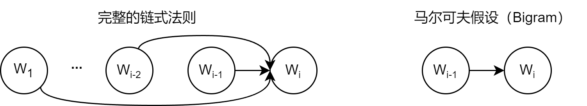
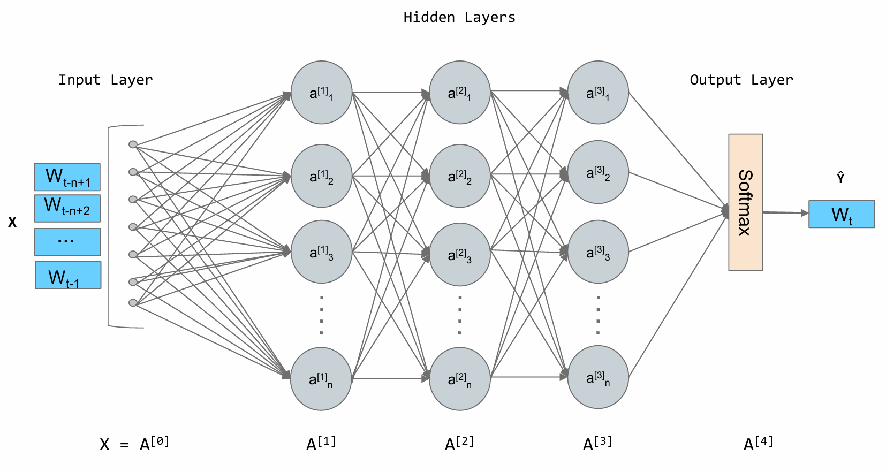
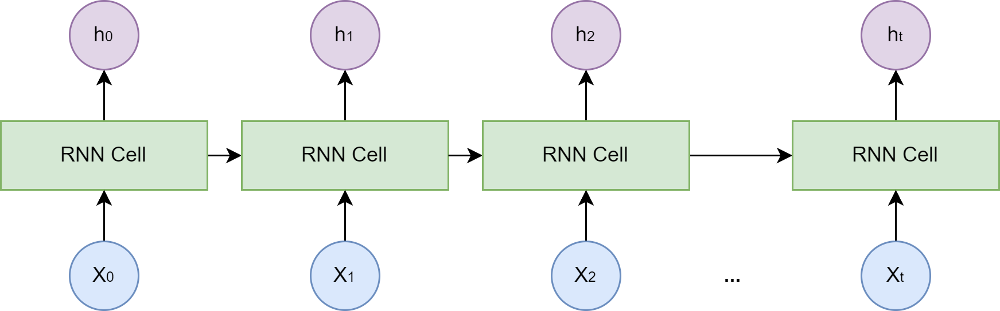
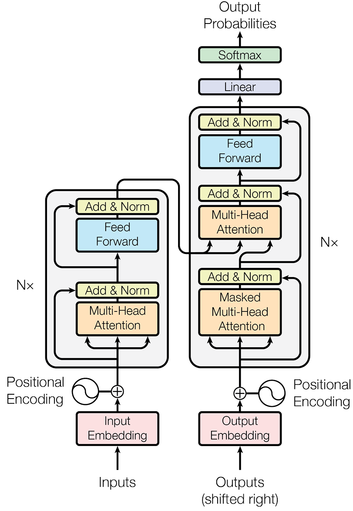
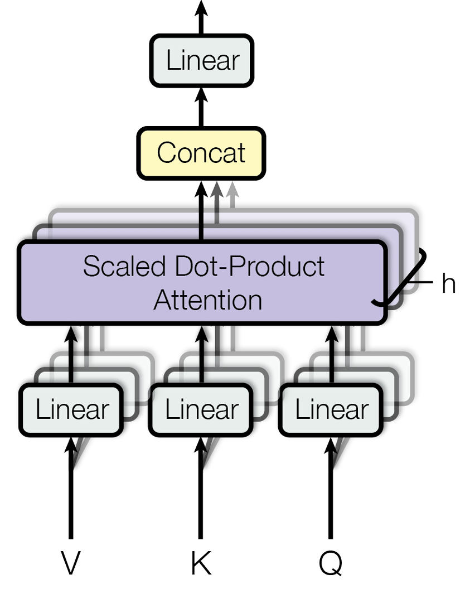
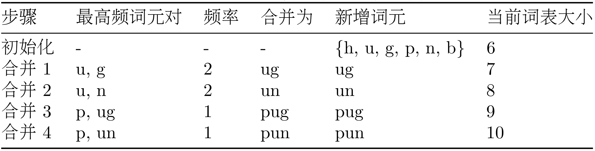

Chapter 3: Fundamentals of Large Language Models¶
The first two chapters introduced the definition and development history of agents. This chapter will focus entirely on large language models themselves to answer a key question: How do modern agents work? We will start from the basic definition of language models, and through learning these principles, lay a solid foundation for understanding how LLMs acquire powerful knowledge reserves and reasoning capabilities.
3.1 Language Models and Transformer Architecture¶
3.1.1 From N-gram to RNN¶
Language Model (LM) is the core of natural language processing, and its fundamental task is to calculate the probability of a word sequence (i.e., a sentence) appearing. A good language model can tell us what kind of sentences are fluent and natural. In multi-agent systems, language models are the foundation for agents to understand human instructions and generate responses. This section will review the evolution from classical statistical methods to modern deep learning models, laying a solid foundation for understanding the subsequent Transformer architecture.
(1) Statistical Language Models and the N-gram Idea
Before the rise of deep learning, statistical methods were the mainstream of language models. The core idea is that the probability of a sentence appearing equals the product of the conditional probabilities of each word in the sentence. For a sentence S composed of words \(w_1,w_2,\cdots,w_m\), its probability P(S) can be expressed as:
This formula is called the chain rule of probability. However, directly calculating this formula is almost impossible because conditional probabilities like \(P(w_m∣w_1,\cdots,w_{m−1})\) are too difficult to estimate from a corpus, as the word sequence \(w_1,\cdots,w_{m−1}\) may have never appeared in the training data.

Figure 3.1 Schematic diagram of Markov assumption
To solve this problem, researchers introduced the Markov Assumption. Its core idea is: we don't need to trace back a word's entire history; we can approximately assume that a word's probability of appearing is only related to the limited \(n−1\) words before it, as shown in Figure 3.1. Language models built on this assumption are called N-gram models. Here, "N" represents the context window size we consider. Let's look at some of the most common examples to understand this concept:
- Bigram (when N=2): This is the simplest case, where we assume a word's appearance is only related to the one word before it. Therefore, the complex conditional probability \(P(w_i∣w_1,\cdots,w_{i−1})\) in the chain rule can be approximated to a more easily calculable form:
- Trigram (when N=3): Similarly, we assume a word's appearance is only related to the two words before it:
These probabilities can be calculated through Maximum Likelihood Estimation (MLE) in large corpora. This term sounds complex, but its idea is very intuitive: what is most likely to appear is what we see most often in the data. For example, for a Bigram model, we want to calculate the probability \(P(w_i∣w_{i−1})\) that the next word is \(w_i\) after word \(w_{i−1}\) appears. According to maximum likelihood estimation, this probability can be estimated through simple counting:
Here, the Count() function represents "counting":
- \(Count(w_{i−1},w_i)\): represents the total number of times the word pair \((w_{i−1},w_i)\) appears consecutively in the corpus.
- \(Count(w_{i−1})\): represents the total number of times the single word \(w_{i−1}\) appears in the corpus.
The formula's meaning is: we use "the number of times word pair \(Count(w_{i−1},w_i)\) appears" divided by "the total number of times word \(Count(w_{i−1})\) appears" as an approximate estimate of \(P(w_i∣w_{i−1})\).
To make this process more concrete, let's manually perform a calculation. Suppose we have a mini corpus containing only the following two sentences: datawhale agent learns, datawhale agent works. Our goal is: using a Bigram (N=2) model, estimate the probability of the sentence datawhale agent learns appearing. According to the Bigram assumption, we examine consecutive pairs of words (i.e., word pairs) each time.
Step 1: Calculate the probability of the first word \(P(datawhale)\) This is the number of times datawhale appears divided by the total number of words. datawhale appears 2 times, and the total number of words is 6.
Step 2: Calculate conditional probability \(P(agent∣datawhale)\) This is the number of times the word pair datawhale agent appears divided by the total number of times datawhale appears. datawhale agent appears 2 times, datawhale appears 2 times.
Step 3: Calculate conditional probability \(P(learns∣agent)\) This is the number of times the word pair agent learns appears divided by the total number of times agent appears. agent learns appears 1 time, agent appears 2 times.
Finally: Multiply the probabilities So, the approximate probability of the entire sentence is:
import collections
# Example corpus, consistent with the corpus in the case explanation above
corpus = "datawhale agent learns datawhale agent works"
tokens = corpus.split()
total_tokens = len(tokens)
# --- Step 1: Calculate P(datawhale) ---
count_datawhale = tokens.count('datawhale')
p_datawhale = count_datawhale / total_tokens
print(f"Step 1: P(datawhale) = {count_datawhale}/{total_tokens} = {p_datawhale:.3f}")
# --- Step 2: Calculate P(agent|datawhale) ---
# First calculate bigrams for subsequent steps
bigrams = zip(tokens, tokens[1:])
bigram_counts = collections.Counter(bigrams)
count_datawhale_agent = bigram_counts[('datawhale', 'agent')]
# count_datawhale was already calculated in step 1
p_agent_given_datawhale = count_datawhale_agent / count_datawhale
print(f"Step 2: P(agent|datawhale) = {count_datawhale_agent}/{count_datawhale} = {p_agent_given_datawhale:.3f}")
# --- Step 3: Calculate P(learns|agent) ---
count_agent_learns = bigram_counts[('agent', 'learns')]
count_agent = tokens.count('agent')
p_learns_given_agent = count_agent_learns / count_agent
print(f"Step 3: P(learns|agent) = {count_agent_learns}/{count_agent} = {p_learns_given_agent:.3f}")
# --- Finally: Multiply the probabilities ---
p_sentence = p_datawhale * p_agent_given_datawhale * p_learns_given_agent
print(f"Finally: P('datawhale agent learns') ≈ {p_datawhale:.3f} * {p_agent_given_datawhale:.3f} * {p_learns_given_agent:.3f} = {p_sentence:.3f}")
>>>
Step 1: P(datawhale) = 2/6 = 0.333
Step 2: P(agent|datawhale) = 2/2 = 1.000
Step 3: P(learns|agent) = 1/2 = 0.500
Finally: P('datawhale agent learns') ≈ 0.333 * 1.000 * 0.500 = 0.167
N-gram models, although simple and effective, have two fatal flaws:
- Data Sparsity: If a word sequence has never appeared in the corpus, its probability estimate is 0, which is obviously unreasonable. Although this can be alleviated through smoothing techniques, it cannot be eradicated.
- Poor Generalization Ability: The model cannot understand semantic similarity between words. For example, even if the model has seen
agent learnsmany times in the corpus, it cannot generalize this knowledge to semantically similar words. When we calculate the probability ofrobot learns, if the wordrobothas never appeared, or if the combinationrobot learnshas never appeared, the probability calculated by the model will also be zero. The model cannot understand the semantic similarity betweenagentandrobot.
(2) Neural Network Language Models and Word Embeddings
The fundamental flaw of N-gram models is that they treat words as isolated, discrete symbols. To overcome this problem, researchers turned to neural networks and proposed an idea: represent words with continuous vectors. In 2003, the Feedforward Neural Network Language Model proposed by Bengio et al. was a milestone in this field[1].
Its core idea can be divided into two steps:
- Build a semantic space: Create a high-dimensional continuous vector space, then map each word in the vocabulary to a point in that space. This point (i.e., vector) is called a Word Embedding or word vector. In this space, semantically similar words have vectors that are close together in position. For example, the vectors of
agentandrobotwill be very close, while the vectors ofagentandapplewill be far apart. - Learn the mapping from context to the next word: Utilize the powerful fitting ability of neural networks to learn a function. The input of this function is the word vectors of the previous \(n−1\) words, and the output is the probability distribution of each word in the vocabulary appearing after the current context.

Figure 3.2 Schematic diagram of neural network language model architecture
As shown in Figure 3.2, in this architecture, word embeddings are automatically learned during model training. To complete the task of "predicting the next word," the model continuously adjusts the vector position of each word, ultimately making these vectors contain rich semantic information. Once we convert words into vectors, we can use mathematical tools to measure the relationships between them. The most commonly used method is Cosine Similarity, which measures their similarity by calculating the cosine of the angle between two vectors.
The meaning of this formula is:
- If two vectors have exactly the same direction, the angle is 0°, the cosine value is 1, indicating complete correlation.
- If two vectors are orthogonal, the angle is 90°, the cosine value is 0, indicating no relationship.
- If two vectors have completely opposite directions, the angle is 180°, the cosine value is -1, indicating complete negative correlation.
Through this method, word vectors can not only capture simple relationships like "synonyms" but also capture more complex analogical relationships.
A famous example demonstrates the semantic relationships captured by word vectors: vector('King') - vector('Man') + vector('Woman') The result of this vector operation is surprisingly close to the position of vector('Queen') in the vector space. This is like performing semantic translation: we start from the point "king," subtract the vector of "male," add the vector of "female," and finally arrive at the position of "queen." This proves that word embeddings can learn abstract concepts like "gender" and "royalty."
import numpy as np
# Assume we have learned simplified 2D word vectors
embeddings = {
"king": np.array([0.9, 0.8]),
"queen": np.array([0.9, 0.2]),
"man": np.array([0.7, 0.9]),
"woman": np.array([0.7, 0.3])
}
def cosine_similarity(vec1, vec2):
dot_product = np.dot(vec1, vec2)
norm_product = np.linalg.norm(vec1) * np.linalg.norm(vec2)
return dot_product / norm_product
# king - man + woman
result_vec = embeddings["king"] - embeddings["man"] + embeddings["woman"]
# Calculate similarity between result vector and "queen"
sim = cosine_similarity(result_vec, embeddings["queen"])
print(f"Result vector of king - man + woman: {result_vec}")
print(f"Similarity of this result with 'queen': {sim:.4f}")
>>>
Result vector of king - man + woman: [0.9 0.2]
Similarity of this result with 'queen': 1.0000
Neural network language models successfully solved the poor generalization problem of N-gram models through word embeddings. However, they still have a limitation similar to N-gram: the context window is fixed. They can only consider a fixed number of preceding words, which laid the groundwork for recurrent neural networks that can handle sequences of arbitrary length.
(3) Recurrent Neural Networks (RNN) and Long Short-Term Memory Networks (LSTM)
Although the neural network language model in the previous section introduced word embeddings to solve the generalization problem, like N-gram models, its context window is of fixed size. To predict the next word, it can only see the previous n−1 words, and earlier historical information is discarded. This obviously does not conform to how we humans understand language. To break the limitation of fixed windows, Recurrent Neural Networks (RNN) emerged, with a very intuitive core idea: add "memory" capability to the network[2].
As shown in Figure 3.3, RNN's design introduces a hidden state vector, which we can understand as the network's short-term memory. At each step of processing the sequence, the network reads the current input word and combines it with its memory from the previous moment (i.e., the hidden state from the previous time step), then generates a new memory (i.e., the hidden state of the current time step) to pass to the next moment. This cyclical process allows information to continuously propagate backward through the sequence.

Figure 3.3 Schematic diagram of RNN structure
However, standard RNNs have a serious problem in practice: the Long-term Dependency Problem. During training, the model needs to adjust weights deep in the network based on errors at the output end through the backpropagation algorithm. For RNNs, the length of the sequence is the depth of the network. When the sequence is very long, gradients undergo multiple multiplications during backward propagation, which causes gradient values to rapidly approach zero (gradient vanishing) or become extremely large (gradient explosion). Gradient vanishing prevents the model from effectively learning the impact of early sequence information on later outputs, making it difficult to capture long-distance dependencies.
To solve the long-term dependency problem, Long Short-Term Memory (LSTM) was designed[3]. LSTM is a special type of RNN, and its core innovation lies in introducing Cell State and a sophisticated Gating Mechanism. The cell state can be seen as an information pathway independent of the hidden state, allowing information to pass more smoothly between time steps. The gating mechanism consists of several small neural networks that can learn how to selectively let information through, thereby controlling the addition and removal of information in the cell state. These gates include:
- Forget Gate: Decides which information to discard from the cell state of the previous moment.
- Input Gate: Decides which new information from the current input to store in the cell state.
- Output Gate: Decides which information to output to the hidden state based on the current cell state.
3.1.2 Transformer Architecture Analysis¶
In the previous section, we saw that RNNs and LSTMs process sequential data by introducing recurrent structures, which to some extent solved the problem of capturing long-distance dependencies. However, this recurrent computation method also brought new bottlenecks: it must process data sequentially. The computation at time step t must wait for time step t−1 to complete before it can begin. This means RNNs cannot perform large-scale parallel computation and are inefficient when processing long sequences, which greatly limits the improvement of model scale and training speed. Transformer was proposed by the Google team in 2017[4]. It completely abandoned the recurrent structure and instead relied entirely on a mechanism called Attention to capture dependencies within sequences, thereby achieving truly parallel computation.
(1) Overall Encoder-Decoder Structure
The original Transformer model was designed for the end-to-end task of machine translation. As shown in Figure 3.4, it follows a classic Encoder-Decoder architecture at the macro level.

Figure 3.4 Overall Transformer architecture diagram
We can understand this structure as a team with clear division of labor:
- Encoder: The task is to "understand" the entire input sentence. It reads all input tokens (this concept will be introduced in Section 3.2.2) and ultimately generates a vector representation rich in contextual information for each token.
- Decoder: The task is to "generate" the target sentence. It references the preceding text it has already generated and "consults" the encoder's understanding results to generate the next word.
To truly understand how Transformer works, the best method is to implement it yourself. In this section, we will adopt a "top-down" approach: first, we build the complete code framework of Transformer, defining all necessary classes and methods. Then, like completing a puzzle, we will implement the specific functions of these classes one by one.
import torch
import torch.nn as nn
import math
# --- Placeholder modules, to be implemented in subsequent subsections ---
class PositionalEncoding(nn.Module):
"""
Positional encoding module
"""
def forward(self, x):
pass
class MultiHeadAttention(nn.Module):
"""
Multi-head attention mechanism module
"""
def forward(self, query, key, value, mask):
pass
class PositionWiseFeedForward(nn.Module):
"""
Position-wise feed-forward network module
"""
def forward(self, x):
pass
# --- Encoder core layer ---
class EncoderLayer(nn.Module):
def __init__(self, d_model, num_heads, d_ff, dropout):
super(EncoderLayer, self).__init__()
self.self_attn = MultiHeadAttention() # To be implemented
self.feed_forward = PositionWiseFeedForward() # To be implemented
self.norm1 = nn.LayerNorm(d_model)
self.norm2 = nn.LayerNorm(d_model)
self.dropout = nn.Dropout(dropout)
def forward(self, x, mask):
# Residual connection and layer normalization will be explained in detail in Section 3.1.2.4
# 1. Multi-head self-attention
attn_output = self.self_attn(x, x, x, mask)
x = self.norm1(x + self.dropout(attn_output))
# 2. Feed-forward network
ff_output = self.feed_forward(x)
x = self.norm2(x + self.dropout(ff_output))
return x
# --- Decoder core layer ---
class DecoderLayer(nn.Module):
def __init__(self, d_model, num_heads, d_ff, dropout):
super(DecoderLayer, self).__init__()
self.self_attn = MultiHeadAttention() # To be implemented
self.cross_attn = MultiHeadAttention() # To be implemented
self.feed_forward = PositionWiseFeedForward() # To be implemented
self.norm1 = nn.LayerNorm(d_model)
self.norm2 = nn.LayerNorm(d_model)
self.norm3 = nn.LayerNorm(d_model)
self.dropout = nn.Dropout(dropout)
def forward(self, x, encoder_output, src_mask, tgt_mask):
# 1. Masked multi-head self-attention (on itself)
attn_output = self.self_attn(x, x, x, tgt_mask)
x = self.norm1(x + self.dropout(attn_output))
# 2. Cross-attention (on encoder output)
cross_attn_output = self.cross_attn(x, encoder_output, encoder_output, src_mask)
x = self.norm2(x + self.dropout(cross_attn_output))
# 3. Feed-forward network
ff_output = self.feed_forward(x)
x = self.norm3(x + self.dropout(ff_output))
return x
(2) From Self-Attention to Multi-Head Attention
Now, let's fill in the most critical module in the skeleton: the attention mechanism.
Imagine we are reading this sentence: "The agent learns because it is intelligent." When we read the bolded "it," to understand its reference, our brain unconsciously places more attention on the word "agent" earlier in the sentence. The Self-Attention mechanism is a mathematical modeling of this phenomenon. It allows the model to consider all other words in the sentence when processing each word and assign different "attention weights" to these words. The higher the weight of a word, the stronger its association with the current word, and the greater the proportion its information should occupy in the current word's representation.
To implement the above process, the self-attention mechanism introduces three learnable roles for each input token vector:
- Query (Q): Represents the current token, which is actively "querying" other tokens to obtain information.
- Key (K): Represents the "label" or "index" of tokens in the sentence that can be queried.
- Value (V): Represents the "content" or "information" carried by the token itself.
These three vectors are all obtained by multiplying the original word embedding vector by three different, learnable weight matrices (\(W^Q,W^K,W^V\)). The entire computation process can be divided into the following steps, which we can imagine as an efficient open-book exam:
- Prepare "exam questions" and "materials": For each word in the sentence, generate its \(Q,K,V\) vectors through weight matrices.
- Calculate relevance scores: To calculate the new representation of word \(A\), use word \(A\)'s \(Q\) vector to perform dot product operations with the \(K\) vectors of all words in the sentence (including \(A\) itself). This score reflects the importance of other words for understanding word \(A\).
- Stabilization and normalization: Divide all obtained scores by a scaling factor \(\sqrt{d_{k}}\) (\(d_{k}\) is the dimension of the \(K\) vector) to prevent gradients from being too small, then use the Softmax function to convert scores into weights that sum to 1, which is the normalization process.
- Weighted sum: Multiply the weights obtained in the previous step by each word's corresponding \(V\) vector, then add all results together. The final vector is the new representation of word \(A\) after integrating global contextual information.
This process can be summarized by a concise formula:
If only one attention calculation is performed (i.e., single-head), the model may only learn to focus on one type of association. For example, when processing "it," it might only learn to focus on the subject. But relationships in language are complex, and we want the model to simultaneously focus on multiple relationships (such as referential relationships, tense relationships, subordinate relationships, etc.). Multi-head attention mechanism emerged. Its idea is simple: instead of doing it all at once, divide it into several groups, do them separately, then merge.
It splits the original Q, K, V vectors into h parts along the dimension (h is the number of "heads"), and each part independently performs a single-head attention calculation. This is like having h different "experts" examine the sentence from different perspectives, with each expert capturing a different feature relationship. Finally, the "opinions" (i.e., output vectors) of these h experts are concatenated, then integrated through a linear transformation to obtain the final output.

Figure 3.5 Multi-head attention mechanism
As shown in Figure 3.5, this design allows the model to jointly attend to information from different positions and different representation subspaces, greatly enhancing the model's expressive power. Below is a simple implementation of multi-head attention for reference.
class MultiHeadAttention(nn.Module):
"""
Multi-head attention mechanism module
"""
def __init__(self, d_model, num_heads):
super(MultiHeadAttention, self).__init__()
assert d_model % num_heads == 0, "d_model must be divisible by num_heads"
self.d_model = d_model
self.num_heads = num_heads
self.d_k = d_model // num_heads
# Define linear transformation layers for Q, K, V and output
self.W_q = nn.Linear(d_model, d_model)
self.W_k = nn.Linear(d_model, d_model)
self.W_v = nn.Linear(d_model, d_model)
self.W_o = nn.Linear(d_model, d_model)
def scaled_dot_product_attention(self, Q, K, V, mask=None):
# 1. Calculate attention scores (QK^T)
attn_scores = torch.matmul(Q, K.transpose(-2, -1)) / math.sqrt(self.d_k)
# 2. Apply mask (if provided)
if mask is not None:
# Set positions where mask is 0 to a very small negative number, so they approach 0 after softmax
attn_scores = attn_scores.masked_fill(mask == 0, -1e9)
# 3. Calculate attention weights (Softmax)
attn_probs = torch.softmax(attn_scores, dim=-1)
# 4. Weighted sum (weights * V)
output = torch.matmul(attn_probs, V)
return output
def split_heads(self, x):
# Transform input x shape from (batch_size, seq_length, d_model)
# to (batch_size, num_heads, seq_length, d_k)
batch_size, seq_length, d_model = x.size()
return x.view(batch_size, seq_length, self.num_heads, self.d_k).transpose(1, 2)
def combine_heads(self, x):
# Transform input x shape from (batch_size, num_heads, seq_length, d_k)
# back to (batch_size, seq_length, d_model)
batch_size, num_heads, seq_length, d_k = x.size()
return x.transpose(1, 2).contiguous().view(batch_size, seq_length, self.d_model)
def forward(self, Q, K, V, mask=None):
# 1. Perform linear transformations on Q, K, V
Q = self.split_heads(self.W_q(Q))
K = self.split_heads(self.W_k(K))
V = self.split_heads(self.W_v(V))
# 2. Calculate scaled dot-product attention
attn_output = self.scaled_dot_product_attention(Q, K, V, mask)
# 3. Combine multi-head outputs and perform final linear transformation
output = self.W_o(self.combine_heads(attn_output))
return output
(3) Feed-Forward Neural Network
In each Encoder and Decoder layer, the multi-head attention sublayer is followed by a Position-wise Feed-Forward Network (FFN). If the role of the attention layer is to "dynamically aggregate" relevant information from the entire sequence, then the role of the feed-forward network is to extract higher-order features from this aggregated information.
The key to this name is "position-wise." It means this feed-forward network acts independently on each token vector in the sequence. In other words, for a sequence of length seq_len, this FFN is actually called seq_len times, processing one token each time. Importantly, all positions share the same set of network weights. This design both maintains the ability to independently process each position and greatly reduces the model's parameter count. This network's structure is very simple, consisting of two linear transformations and a ReLU activation function:
Where \(x\) is the output of the attention sublayer. \(W_1,b_1,W_2,b_2\) are learnable parameters. Typically, the output dimension d_ff of the first linear layer is much larger than the input dimension d_model (for example, d_ff = 4 * d_model), then after ReLU activation, it is mapped back to d_model dimension through the second linear layer. This "expand then shrink" design is believed to help the model learn richer feature representations.
In our PyTorch skeleton, we can implement this module with the following code:
class PositionWiseFeedForward(nn.Module):
"""
Position-wise feed-forward network module
"""
def __init__(self, d_model, d_ff, dropout=0.1):
super(PositionWiseFeedForward, self).__init__()
self.linear1 = nn.Linear(d_model, d_ff)
self.dropout = nn.Dropout(dropout)
self.linear2 = nn.Linear(d_ff, d_model)
self.relu = nn.ReLU()
def forward(self, x):
# x shape: (batch_size, seq_len, d_model)
x = self.linear1(x)
x = self.relu(x)
x = self.dropout(x)
x = self.linear2(x)
# Final output shape: (batch_size, seq_len, d_model)
return x
(4) Residual Connections and Layer Normalization
In each encoder and decoder layer of Transformer, all submodules (such as multi-head attention and feed-forward networks) are wrapped by an Add & Norm operation. This combination ensures that Transformer can train stably.
This operation consists of two parts:
- Residual Connection (Add): This operation directly adds the submodule's input
xto the submodule's outputSublayer(x). This structure solves the Vanishing Gradients problem in deep neural networks. During backpropagation, gradients can bypass the submodule and propagate forward directly, ensuring that even if the network has many layers, the model can be effectively trained. Its formula can be expressed as: \(\text{Output} = x + \text{Sublayer}(x)\). - Layer Normalization (Norm): This operation normalizes all features of a single sample, making its mean 0 and variance 1. This solves the Internal Covariate Shift problem during model training, keeping the input distribution of each layer stable, thereby accelerating model convergence and improving training stability.
3.1.2.5 Positional Encoding
We already understand that the core of Transformer is the self-attention mechanism, which captures dependencies by calculating relationships between any two tokens in a sequence. However, this computation method has an inherent problem: it does not contain any information about token order or position. For self-attention, the two sequences "agent learns" and "learns agent" are completely equivalent because it only cares about relationships between tokens and ignores their arrangement. To solve this problem, Transformer introduced Positional Encoding.
The core idea of positional encoding is to add an additional "position vector" representing its absolute and relative position information to each token embedding vector in the input sequence. This position vector is not learned but directly calculated through a fixed mathematical formula. This way, even if two tokens (for example, two tokens both called agent) have the same embedding, because they are in different positions in the sentence, the vectors they ultimately input to the Transformer model will become unique due to adding different positional encodings. The positional encoding proposed in the original paper uses sine and cosine functions to generate, with the formula as follows:
Where:
- \(pos\) is the position of the token in the sequence (for example, \(0\), \(1\), \(2\), ...)
- \(i\) is the dimension index in the position vector (from \(0\) to \(d_{\text{model}}/2\))
- \(d_{\text{model}}\) is the dimension of the word embedding vector (consistent with what we defined in the model)
Now, let's implement the PositionalEncoding module and complete the last part of our Transformer skeleton code.
class PositionalEncoding(nn.Module):
"""
Add positional encoding to word embedding vectors of input sequence.
"""
def __init__(self, d_model: int, dropout: float = 0.1, max_len: int = 5000):
super().__init__()
self.dropout = nn.Dropout(p=dropout)
# Create a sufficiently long positional encoding matrix
position = torch.arange(max_len).unsqueeze(1)
div_term = torch.exp(torch.arange(0, d_model, 2) * (-math.log(10000.0) / d_model))
# pe (positional encoding) size is (max_len, d_model)
pe = torch.zeros(max_len, d_model)
# Even dimensions use sin, odd dimensions use cos
pe[:, 0::2] = torch.sin(position * div_term)
pe[:, 1::2] = torch.cos(position * div_term)
# Register pe as buffer, so it won't be treated as model parameter but will move with the model (e.g., to(device))
self.register_buffer('pe', pe.unsqueeze(0))
def forward(self, x: torch.Tensor) -> torch.Tensor:
# x.size(1) is the current input sequence length
# Add positional encoding to input vector
x = x + self.pe[:, :x.size(1)]
return self.dropout(x)
This subsection mainly helps understand the macro structure of Transformer and the operational details of each internal module. Since it's to supplement the knowledge system of large models in agent learning, we won't continue to implement further. At this point, we have laid a solid architectural foundation for understanding modern large language models. In the next section, we will explore the Decoder-Only architecture and see how it evolved based on Transformer's ideas.
3.1.3 Decoder-Only Architecture¶
In the previous section, we built a complete Transformer model by hand, which performs excellently in many end-to-end scenarios. But when the task shifts to building a general model that can converse with people, create, and serve as an agent's brain, perhaps we don't need such a complex structure.
Transformer's design philosophy is "understand first, then generate." The encoder is responsible for deeply understanding the entire input sentence, forming a contextual memory containing global information, then the decoder generates translation based on this memory. But when OpenAI developed GPT (Generative Pre-trained Transformer), they proposed a simpler idea[5]: Isn't the core task of language to predict the next most likely word?
Whether answering questions, writing stories, or generating code, essentially it's adding the most reasonable content word by word after an existing text sequence. Based on this idea, GPT made a bold simplification: It completely abandoned the encoder and only kept the decoder part. This is the origin of the Decoder-Only architecture.
The working mode of the Decoder-Only architecture is called Autoregressive. This professional-sounding term actually describes a very simple process:
- Give the model a starting text (for example, "Datawhale Agent is").
- The model predicts the next most likely word (for example, "a").
- The model adds the word "a" it just generated to the end of the input text, forming a new input ("Datawhale Agent is a").
- Based on this new input, the model predicts the next word again (for example, "powerful").
- Continuously repeat this process until a complete sentence is generated or a stop condition is reached.
The model is like playing a "word chain" game, constantly "reviewing" the content it has already written, then thinking about what the next word should be.
You might ask: during training, the model is often given the complete text sequence at once, so how does it ensure that when learning to predict the next token, it does not "peek" at later answers?
The answer is Masked Self-Attention. In the Decoder-Only architecture, this mechanism becomes crucial. Its working principle is very clever:
During training, although a whole text sequence can be fed into the model in parallel, after the self-attention mechanism calculates the attention score matrix (i.e., each word's attention score to all other words) and before Softmax normalization, the model applies a causal mask. This mask replaces the scores corresponding to all tokens after the current position with a very large negative number. When this matrix goes through Softmax, the probabilities at those positions become 0. In this way, when the model calculates the representation at any position, it is mathematically prevented from attending to information after that position.
During generation, the situation is even more direct: future tokens have not been generated yet, so the model can only use the already generated content as context and predict the next token step by step. Masked self-attention keeps the training objective consistent with autoregressive generation, ensuring that the model always relies only on information before the current position.
Advantages of Decoder-Only Architecture
This seemingly simple architecture has brought tremendous success, with advantages including:
- Unified Training Objective: The model's only task is to "predict the next word," a simple goal very suitable for pre-training on massive unlabeled text data.
- Simple Structure, Easy to Scale: Fewer components mean easier scaling. Today's GPT-4, Llama, and other giant models with hundreds of billions or even trillions of parameters are all based on this concise architecture.
- Naturally Suited for Generation Tasks: Its autoregressive working mode perfectly matches all generative tasks (dialogue, writing, code generation, etc.), which is also the core reason it can become the foundation for building general agents.
In summary, the Decoder-Only architecture evolved from Transformer's decoder, through the simple paradigm of "predicting the next word," opened the era of large language models we are in today.
3.2 Interacting with Large Language Models¶
3.2.1 Prompt Engineering¶
If we compare large language models to an extremely capable "brain," then Prompt is the language we use to communicate with this "brain." Prompt engineering is the study of how to design precise prompts to guide the model to produce the responses we expect. For building agents, a carefully designed prompt can make collaboration and division of labor between agents efficient.
(1) Model Sampling Parameters
When using large models, you often see configurable parameters like Temperature. Their essence is to adjust the model's sampling strategy for "probability distribution" to match specific scenario needs. Configuring appropriate parameters can improve Agent performance in specific scenarios.
The traditional probability distribution is calculated by the Softmax formula: \(p_i = \frac{e^{z_i}}{\sum_{j=1}^k e^{z_j}}\). The essence of sampling parameters is to "readjust" or "truncate" the distribution based on different strategies, thereby changing the next token output by the large model.
Temperature: Temperature is a key parameter controlling the "randomness" and "determinism" of model output. Its principle is to introduce a temperature coefficient \(T\gt0\), rewriting Softmax as \(p_i^{(T)} = \frac{e^{z_i / T}}{\sum_{j=1}^k e^{z_j / T}}\).
When T decreases, the distribution becomes "steeper," high-probability item weights are further amplified, generating more "conservative" text with higher repetition rates. When T increases, the distribution becomes "flatter," low-probability item weights increase, generating more "diverse" but possibly incoherent content.
-
Low temperature (0 \(\leqslant\) Temperature \(\lt\) 0.3): Output is more "precise, deterministic." Applicable scenarios: Factual tasks: such as Q&A, data calculation, code generation; Rigorous scenarios: legal text interpretation, technical documentation writing, academic concept explanation, etc.
-
Medium temperature (0.3 \(\leqslant\) Temperature \(\lt\) 0.7): Output is "balanced, natural." Applicable scenarios: Daily conversation: such as customer service interaction, chatbots; Regular creation: such as email writing, product copy, simple story creation.
-
High temperature (0.7 \(\leqslant\) Temperature \(\lt\) 2): Output is "innovative, divergent." Applicable scenarios: Creative tasks: such as poetry creation, science fiction story conception, advertising slogan brainstorming, artistic inspiration; Divergent thinking.
Top-k: Its principle is to sort all tokens by probability from high to low, take the top k tokens to form a "candidate set," then "normalize" the probabilities of the filtered k tokens: $ \hat{p}i = \frac{p_i}{\sum{j \in \text{candidate set}} p_j}$
- Difference and connection with temperature sampling: Temperature sampling adjusts the probability distribution of all tokens (smooth or steep) through temperature T, without changing the number of candidate tokens (still considering all N). Top-k sampling limits the number of candidate tokens (only keeping the top k high-probability tokens) through the k value, then samples from them. When k=1, output is completely deterministic, degenerating to "greedy sampling."
Top-p: Its principle is to sort all tokens by probability from high to low, starting from the first token after sorting, gradually accumulating probabilities until the cumulative sum first reaches or exceeds threshold p: \(\sum_{i \in S} p_{(i)} \geq p\). At this point, all tokens included in the accumulation process form the "nucleus set," and finally the nucleus set is normalized.
- Difference and connection with Top-k: Compared to Top-k with fixed truncation size, Top-p can dynamically adapt to the "long tail" characteristics of different distributions, with better adaptability to extreme cases of uneven probability distribution.
In text generation, when Top-p, Top-k, and temperature coefficient are set simultaneously, these parameters work together in a layered filtering manner, with priority order: temperature adjustment → Top-k → Top-p. Temperature adjusts the overall steepness of the distribution, Top-k first retains the k candidates with highest probability, then Top-p selects the minimum set with cumulative probability ≥ p from Top-k results as the final candidate set. However, usually choosing one of Top-k or Top-p is sufficient; if both are set, the actual candidate set is the intersection of the two. Note that if temperature is set to 0, Top-k and Top-p become irrelevant because the most likely Token will be the next predicted Token; if Top-k is set to 1, temperature and Top-p also become irrelevant because only one Token passes the Top-k criterion and it will be the next predicted Token.
(2) Zero-shot, One-shot, and Few-shot Prompting
According to the number of examples (Exemplars) we provide to the model, prompts can be divided into three types. To better understand them, let's use a sentiment classification task as an example, with the goal of having the model judge the emotional tone of a text (such as positive, negative, or neutral).
Zero-shot Prompting This means we don't give the model any examples and directly ask it to complete the task based on instructions. This benefits from the model's powerful generalization ability acquired after pre-training on massive data.
Case: We directly give the model instructions, requiring it to complete the sentiment classification task.
One-shot Prompting We provide the model with one complete example, showing it the task format and expected output style.
Case: We first give the model a complete "question-answer" pair as a demonstration, then pose our new question.
Text: This restaurant's service is too slow.
Sentiment: Negative
Text: Datawhale's AI Agent course is excellent!
Sentiment:
The model will imitate the given example format and complete "Positive" for the second text.
Few-shot Prompting We provide multiple examples, which allows the model to more accurately understand the task's details, boundaries, and nuances, thereby achieving better performance.
Case: We provide multiple examples covering different situations, allowing the model to have a more comprehensive understanding of the task.
Text: This restaurant's service is too slow.
Sentiment: Negative
Text: This movie's plot is very bland.
Sentiment: Neutral
Text: Datawhale's AI Agent course is excellent!
Sentiment:
The model will synthesize all examples and more accurately classify the sentiment of the last sentence as "Positive."
(3) Impact of Instruction Tuning
Early GPT models (such as GPT-3) were mainly "text completion" models; they were good at continuing text based on preceding text but not necessarily good at understanding and executing human instructions.
Instruction Tuning is a fine-tuning technique that uses a large amount of "instruction-answer" format data to further train pre-trained models. After instruction tuning, models can better understand and follow user instructions. All models we use in daily work and study today (such as ChatGPT, DeepSeek, Qwen) are instruction-tuned models in their model families.
- Prompts for "text completion" models (you need to use few-shot prompts to "teach" the model what to do):
This is a program that translates English to Chinese.
English: Hello
Chinese: 你好
English: How are you?
Chinese:
- Prompts for "instruction-tuned" models (you can directly give instructions):
The emergence of instruction tuning has greatly simplified how we interact with models, making direct, clear natural language instructions possible.
(4) Basic Prompting Techniques
Role-playing By assigning the model a specific role, we can guide its response style, tone, and knowledge scope, making its output more suitable for specific scenario needs.
# Case
You are now a senior Python programming expert. Please explain what GIL (Global Interpreter Lock) is in Python in a way that even a beginner can understand.
In-context Example This is consistent with the idea of few-shot prompting. By providing clear input-output examples in the prompt, we "teach" the model how to handle our requests, which is especially effective when dealing with complex formats or specific style tasks.
# Case
I need you to extract product names and user sentiment from product reviews. Please output strictly in the JSON format below.
Review: The screen display of this "Stardust" laptop is amazing, but I don't really like its keyboard feel.
Output: {"product_name": "Stardust Laptop", "sentiment": "Mixed"}
Review: The "SoundMove" headphones I just bought have great sound quality, and the battery life exceeded my expectations!
Output:
(5) Chain-of-Thought
For complex problems requiring logical reasoning, calculation, or multi-step thinking, directly asking the model to give an answer often leads to errors. Chain-of-Thought (CoT) is a powerful prompting technique that improves the model's reasoning ability on complex tasks by guiding it to "think step by step."
The key to implementing CoT is to add a simple guiding phrase in the prompt, such as "please think step by step" or "Let's think step by step."
# Chain-of-Thought Prompt
A basketball team won 60% of their 80 games in one season. In the next season, they played 15 games and won 12. What is the total winning percentage for both seasons?
Please think step by step and solve.
>>>
(The model might output)
Okay, let's calculate step by step.
Step 1: Calculate the number of games won in the first season.
80 games * 60% = 48 games.
Step 2: Calculate the total number of games and total wins for both seasons.
Total games = 80 + 15 = 95 games.
Total wins = 48 + 12 = 60 games.
Step 3: Calculate the total winning percentage.
Total winning percentage = (Total wins / Total games) * 100% = (60 / 95) * 100% ≈ 63.16%.
So, the total winning percentage for both seasons is approximately 63.16%.
By explicitly showing its reasoning process, the model not only more easily arrives at the correct answer but also makes its response more credible and easier for us to check and correct.
3.2.2 Text Tokenization¶
We know that computers essentially can only understand numbers. Therefore, before feeding natural language text to large language models, it must first be converted into a numerical format that the model can process. This process of converting text sequences into numerical sequences is called Tokenization. The role of a Tokenizer is to define a set of rules to split raw text into minimal units, which we call Tokens.
3.2.2.1 Why Tokenization is Needed
Early natural language processing tasks might adopt simple tokenization strategies:
-
Word-based: Directly splits sentences into words using spaces or punctuation. This method is intuitive but faces significant challenges:
- Vocabulary Explosion and OOV: A language's vocabulary is vast. If each word is treated as an independent token, the vocabulary becomes difficult to manage. Worse, the model cannot handle any word that does not appear in its vocabulary (e.g., "DatawhaleAgent"). This phenomenon is known as the "Out-Of-Vocabulary" (OOV) problem.
- Lack of Semantic Association: The model struggles to capture the semantic relationships between morphologically similar words. For instance, "look," "looks," and "looking" are treated as three completely different tokens, despite sharing a common core meaning. Similarly, the semantics of low-frequency words in the training data cannot be fully learned due to their rare occurrences.
-
Character-based: Splits text into individual characters. This method has a very small vocabulary (e.g., English letters, numbers, and punctuation) and thus avoids the OOV problem. However, its disadvantage is that individual characters mostly lack independent semantic meaning. The model must expend more effort learning to combine characters into meaningful words, leading to inefficient learning.
To balance vocabulary size and semantic expression, modern large language models widely adopt Subword Tokenization algorithms. The core idea is to keep common words (like "agent") as single, complete tokens while breaking down uncommon words (like "Tokenization") into meaningful subword pieces (such as "Token" and "ization"). This approach not only controls the size of the vocabulary but also enables the model to understand and generate new words by combining subwords.
3.2.2.2 Byte-Pair Encoding Algorithm Analysis
Byte-Pair Encoding (BPE) is one of the most mainstream subword tokenization algorithms[6], adopted by the GPT series models. Its core idea is very concise and can be understood as a "greedy" merging process:
- Initialization: Initialize the vocabulary to all basic characters appearing in the corpus.
- Iterative Merging: In the corpus, count the frequency of all adjacent token pairs, find the pair with the highest frequency, merge them into a new token, and add it to the vocabulary.
- Repeat: Repeat step 2 until the vocabulary size reaches a preset threshold.
Case Demonstration: Suppose our mini corpus is {"hug": 1, "pug": 1, "pun": 1, "bun": 1}, and we want to build a vocabulary of size 10. The BPE training process can be represented by Table 3.1:
Table 3.1 Example of BPE Algorithm Merging Process

After training ends, when the vocabulary size reaches 10, we get new tokenization rules. Now, for an unseen word "bug," the tokenizer will first check if "bug" is in the vocabulary and find it's not; then check "bu" and find it's not; finally check "b" and "ug," find both are in, and thus split it into ['b', 'ug'].
Below we use a simple Python code to simulate the above process:
import re, collections
def get_stats(vocab):
"""Count token pair frequencies"""
pairs = collections.defaultdict(int)
for word, freq in vocab.items():
symbols = word.split()
for i in range(len(symbols)-1):
pairs[symbols[i],symbols[i+1]] += freq
return pairs
def merge_vocab(pair, v_in):
"""Merge token pairs"""
v_out = {}
bigram = re.escape(' '.join(pair))
p = re.compile(r'(?<!\S)' + bigram + r'(?!\S)')
for word in v_in:
w_out = p.sub(''.join(pair), word)
v_out[w_out] = v_in[word]
return v_out
# Prepare corpus, add </w> at the end of each word to indicate ending, and split characters
vocab = {'h u g </w>': 1, 'p u g </w>': 1, 'p u n </w>': 1, 'b u n </w>': 1}
num_merges = 4 # Set number of merges
for i in range(num_merges):
pairs = get_stats(vocab)
if not pairs:
break
best = max(pairs, key=pairs.get)
vocab = merge_vocab(best, vocab)
print(f"Merge {i+1}: {best} -> {''.join(best)}")
print(f"New vocabulary (partial): {list(vocab.keys())}")
print("-" * 20)
>>>
Merge 1: ('u', 'g') -> ug
New vocabulary (partial): ['h ug </w>', 'p ug </w>', 'p u n </w>', 'b u n </w>']
--------------------
Merge 2: ('ug', '</w>') -> ug</w>
New vocabulary (partial): ['h ug</w>', 'p ug</w>', 'p u n </w>', 'b u n </w>']
--------------------
Merge 3: ('u', 'n') -> un
New vocabulary (partial): ['h ug</w>', 'p ug</w>', 'p un </w>', 'b un </w>']
--------------------
Merge 4: ('un', '</w>') -> un</w>
New vocabulary (partial): ['h ug</w>', 'p ug</w>', 'p un</w>', 'b un</w>']
--------------------
This code clearly demonstrates how the BPE algorithm gradually builds and expands the vocabulary by iteratively merging the highest-frequency adjacent token pairs.
Many subsequent algorithms are optimizations based on BPE. Among them, WordPiece and SentencePiece developed by Google are the two most influential.
- WordPiece: The algorithm adopted by Google's BERT model[7]. It is very similar to BPE, but the criterion for merging tokens is not "highest frequency" but "maximizing the improvement of the corpus's language model probability." Simply put, it prioritizes merging token pairs that can maximize the "fluency" improvement of the entire corpus.
- SentencePiece: An open-source tokenization tool by Google[8], adopted by the Llama series models. Its biggest feature is treating spaces as ordinary characters (usually represented by underscore
_). This makes the tokenization and decoding process completely reversible and independent of specific languages (for example, it doesn't need to know that Chinese doesn't use spaces for word segmentation).
3.2.2.3 Significance of Tokenizers for Developers
Understanding the details of tokenization algorithms is not the goal, but as an agent developer, understanding the actual impact of tokenizers is important, as it directly relates to agent performance, cost, and stability:
- Context Window Limitation: The model's context window (such as 8K, 128K) is calculated in Token count, not character count or word count. The same text may have vastly different Token counts in different languages (such as Chinese and English) or with different tokenizers. Precisely managing input length and avoiding exceeding context limits is the foundation for building long-term memory agents.
- API Cost: Most model APIs charge based on Token count. Understanding how your text will be tokenized is a key step in estimating and controlling agent operating costs.
- Model Performance Anomalies: Sometimes strange model behavior stems from tokenization. For example, the model might be good at calculating
2 + 2but might make mistakes with2+2(without spaces) because the latter might be treated by the tokenizer as an independent, uncommon token. Similarly, a word with different capitalization of the first letter might be split into completely different Token sequences, affecting the model's understanding. Considering these "traps" when designing prompts and parsing model outputs helps improve agent robustness.
3.2.3 Calling Open-Source Large Language Models¶
In Chapter 1 of this book, we interacted with large language models through APIs to drive our agents. This is a fast and convenient method, but not the only one. For many scenarios requiring sensitive data processing, offline operation, or fine cost control, deploying large language models directly locally becomes crucial.
Hugging Face Transformers is a powerful open-source library that provides standardized interfaces to load and use tens of thousands of pre-trained models. We will use it to complete this practice.
Environment Configuration and Model Selection: To ensure most readers can run smoothly on personal computers, we deliberately chose a small-scale but powerful model: Qwen/Qwen1.5-0.5B-Chat. This is a dialogue model with about 500 million parameters open-sourced by Alibaba DAMO Academy. It's small in size, excellent in performance, and very suitable for introductory learning and local deployment.
First, please ensure you have installed the necessary libraries:
In the transformers library, we typically use the AutoModelForCausalLM and AutoTokenizer classes to automatically load weights and tokenizers matching the model. The following code will automatically download required model files and tokenizer configurations from Hugging Face Hub, which may take some time depending on your network speed.
import torch
from transformers import AutoModelForCausalLM, AutoTokenizer
# Specify model ID
model_id = "Qwen/Qwen1.5-0.5B-Chat"
# Set device, prioritize GPU
device = "cuda" if torch.cuda.is_available() else "cpu"
print(f"Using device: {device}")
# Load tokenizer
tokenizer = AutoTokenizer.from_pretrained(model_id)
# Load model and move it to specified device
model = AutoModelForCausalLM.from_pretrained(model_id).to(device)
print("Model and tokenizer loaded!")
Let's create a dialogue prompt. The Qwen1.5-Chat model follows a specific dialogue template. Then, we can use the tokenizer loaded in the previous step to convert the text prompt into numerical IDs (i.e., Token IDs) that the model can understand.
# Prepare dialogue input
messages = [
{"role": "system", "content": "You are a helpful assistant."},
{"role": "user", "content": "Hello, please introduce yourself."}
]
# Use tokenizer's template to format input
text = tokenizer.apply_chat_template(
messages,
tokenize=False,
add_generation_prompt=True
)
# Encode input text
model_inputs = tokenizer([text], return_tensors="pt").to(device)
print("Encoded input text:")
print(model_inputs)
>>>
{'input_ids': tensor([[151644, 8948, 198, 2610, 525, 264, 10950, 17847, 13,151645, 198, 151644, 872, 198, 108386, 37945, 100157, 107828,1773, 151645, 198, 151644, 77091, 198]], device='cuda:0'), 'attention_mask': tensor([[1, 1, 1, 1, 1, 1, 1, 1, 1, 1, 1, 1, 1, 1, 1, 1, 1, 1, 1, 1, 1, 1, 1, 1]],
device='cuda:0')}
Now we can call the model's generate() method to generate an answer. The model will output a series of Token IDs representing its answer.
Finally, we need to use the tokenizer's decode() method to translate these numerical IDs back into human-readable text.
# Use model to generate answer
# max_new_tokens controls the maximum number of new Tokens the model can generate
generated_ids = model.generate(
model_inputs.input_ids,
max_new_tokens=512
)
# Truncate the input part from generated Token IDs
# This way we only decode the newly generated part by the model
generated_ids = [
output_ids[len(input_ids):] for input_ids, output_ids in zip(model_inputs.input_ids, generated_ids)
]
# Decode generated Token IDs
response = tokenizer.batch_decode(generated_ids, skip_special_tokens=True)[0]
print("\nModel's answer:")
print(response)
>>>
My name is Tongyi Qianwen, a pre-trained language model developed by Alibaba Cloud. I can answer questions, create text, express opinions, and write code. My main functions are to provide help in multiple fields, including but not limited to: language understanding, text generation, machine translation, question-answering systems, etc. Is there anything I can help you with?
After running all the code, you will see the model-generated introduction about the Qwen model on your local computer. Congratulations, you have successfully deployed and run an open-source large language model locally!
3.2.4 Model Selection¶
In the previous section, we successfully ran a small open-source language model locally. This naturally raises a crucial question for agent developers: in the current context of hundreds of blooming models, how should we choose the most suitable model for specific tasks?
Choosing a language model is not simply pursuing "the biggest, the strongest" but a decision-making process balancing performance, cost, speed, and deployment methods. This section will first organize several key considerations for model selection, then review current mainstream closed-source and open-source models.
Since large language model technology is in a stage of rapid development, with new models and versions emerging constantly and extremely fast iteration, this section strives to provide an overview of current mainstream models and selection considerations when written, but readers should note that specific model versions and performance data mentioned may change over time, and only some work is listed, not comprehensively. We focus more on introducing core technical characteristics, development trends, and general selection principles in agent development.
3.2.4.1 Key Considerations for Model Selection
When choosing a large language model for your agent, you can comprehensively evaluate from the following dimensions:
- Performance and Capability: This is the core consideration. Different models excel at different tasks; some are good at logical reasoning and code generation, while others are better at creative writing or multilingual translation. You can refer to some public benchmark leaderboards (such as LMSys Chatbot Arena Leaderboard) to evaluate models' comprehensive capabilities.
- Cost: For closed-source models, cost mainly manifests in API call fees, usually charged by Token count. For open-source models, cost manifests in hardware (GPU, memory) and operations required for local deployment. Choices need to be made based on application's expected usage and budget.
- Speed (Latency): For agents requiring real-time interaction (such as customer service, game NPCs), model response speed is crucial. Some lightweight or optimized models (such as GPT-3.5 Turbo, Claude 3.5 Sonnet) perform better in latency.
- Context Window: The upper limit of Token count the model can process at once. For agents needing to understand long documents, analyze code repositories, or maintain long-term conversation memory, choosing a model with a larger context window (such as 128K Tokens or higher) is necessary.
- Deployment Method: Using APIs is simplest and most convenient, but data needs to be sent to third parties and is subject to service provider terms. Local deployment can ensure data privacy and highest degree of autonomy, but has higher technical and hardware requirements.
- Ecosystem and Toolchain: A model's popularity also determines the maturity of its surrounding ecosystem. Mainstream models usually have richer community support, tutorials, pre-trained models, fine-tuning tools, and compatible development frameworks (such as LangChain, LlamaIndex, Hugging Face Transformers), which can greatly accelerate development and reduce difficulty. Choosing a model with an active community and complete toolchain makes it easier to find solutions and resources when encountering problems.
- Fine-tunability and Customization: For agents needing to process domain-specific data or perform specific tasks, model fine-tuning capability is crucial. Some models provide convenient fine-tuning interfaces and tools, allowing developers to customize training using their own datasets, significantly improving model performance and accuracy in specific scenarios. Open-source models usually provide greater flexibility in this regard.
- Safety and Ethics: With widespread application of large language models, their potential safety risks and ethical issues are increasingly prominent. When choosing models, consider their performance in bias, toxicity, hallucination, etc., and service providers' or open-source communities' investment in model safety and responsible AI. For applications facing the public or involving sensitive information, model safety and ethical compliance are considerations that cannot be ignored.
3.2.4.2 Overview of Closed-Source Models
Closed-source models usually represent the cutting edge of current AI technology and provide stable, easy-to-use API services, making them the first choice for building high-performance agents.
- OpenAI GPT Series: From GPT-3 that opened the large model era, to ChatGPT that introduced RLHF (Reinforcement Learning from Human Feedback) and achieved alignment with human intent, to GPT-4 that opened the multimodal era, OpenAI continues to lead industry development. The latest GPT-5 further elevates multimodal capabilities and general intelligence to new heights, seamlessly processing text, audio, and image inputs and generating corresponding outputs, with significantly improved response speed and naturalness, especially excelling in real-time voice dialogue.
- Google Gemini Series: Google DeepMind's Gemini series models are representatives of native multimodality, with the core feature of unified processing of multiple modalities including text, code, audio/video, and images, and advantages in massive information processing with ultra-long context windows. Gemini Ultra is its most powerful model, suitable for highly complex tasks; Gemini Pro is suitable for a wide range of tasks, providing high performance and efficiency; Gemini Nano is optimized for on-device deployment. The latest Gemini 2.5 series models, such as Gemini 2.5 Pro and Gemini 2.5 Flash, further improve reasoning capabilities and context windows, especially Gemini 2.5 Flash with faster inference speed and cost-effectiveness, suitable for scenarios requiring quick responses.
- Anthropic Claude Series: Anthropic is a company focused on AI safety and responsible AI. Its Claude series models have prioritized AI safety from the design stage, renowned for reliability in handling long documents, reducing harmful outputs, and following instructions, deeply favored by enterprise applications. Claude 3 series includes Claude 3 Opus (most intelligent, strongest performance), Claude 3 Sonnet (balanced choice of performance and speed), and Claude 3 Haiku (fastest, most compact model, suitable for near real-time interaction). The latest Claude 4 series models, such as Claude 4 Opus, have made significant progress in general intelligence, complex reasoning, and code generation, further improving capabilities in handling long contexts and multimodal tasks.
- Domestic Mainstream Models: China has emerged with many competitive closed-source models in the large language model field, represented by Baidu ERNIE Bot, Tencent Hunyuan, Huawei Pangu-α, iFlytek SparkDesk, and Moonshot AI. These domestic models have natural advantages in Chinese processing and deeply empower local industries.
3.2.4.3 Overview of Open-Source Models
Open-source models provide developers with the highest degree of flexibility, transparency, and autonomy, catalyzing a prosperous community ecosystem. They allow developers to deploy locally, perform customized fine-tuning, and have complete model control.
- Meta Llama Series: Meta's Llama series is an important milestone in open-source large language models. The series has become the foundation for many derivative projects and research with excellent comprehensive performance, open licensing agreements, and strong community support. Llama 4 series was released in April 2025, Meta's first models adopting Mixture of Experts (MoE) architecture, which significantly improves computational efficiency by only activating model parts needed to process specific tasks. The series includes three distinctly positioned models: Llama 4 Scout supports a 10 million token context window designed for long document analysis and mobile deployment. Llama 4 Maverick focuses on multimodal capabilities, excelling in coding, complex reasoning, and multilingual support. Llama 4 Behemoth outperforms competitors in multiple STEM benchmarks and is Meta's most powerful model currently.
- Mistral AI Series: Mistral AI from France is renowned for its "small size, high performance" model design. Its latest model Mistral Medium 3.1 was released in August 2025, with significantly improved accuracy and response speed in tasks such as code generation, STEM reasoning, and cross-domain Q&A, with benchmark performance superior to Claude Sonnet 3.7 and Llama 4 Maverick and other similar models. It has native multimodal capabilities, can simultaneously process mixed image and text inputs, and has a built-in "tone adaptation layer" to help enterprises more easily achieve brand-aligned outputs.
- Domestic Open-Source Forces: Domestic manufacturers and research institutions are also actively embracing open source, such as Alibaba's Qwen (Tongyi Qianwen) series and Tsinghua University's collaboration with Zhipu AI's ChatGLM series. They provide powerful Chinese capabilities and have built active communities around themselves.
For agent developers, closed-source models provide "out-of-the-box" convenience, while open-source models grant us "customization freedom." Understanding the characteristics and representative models of these two camps is the first step in making wise technical selections for our agent projects.
3.3 Scaling Laws and Limitations of Large Language Models¶
Large Language Models (LLMs) have made remarkable progress in recent years, with continuously expanding capability boundaries and increasingly rich application scenarios. However, behind these achievements lies a deep understanding of the relationship between model scale, data volume, and computational resources, namely Scaling Laws. Meanwhile, as an emerging technology, LLMs also face many challenges and limitations. This section will deeply explore these core concepts, aiming to help readers comprehensively understand LLMs' capability boundaries, thereby leveraging strengths and avoiding weaknesses when building agents.
3.3.1 Scaling Laws¶
Scaling Laws are one of the most important discoveries in the large language model field in recent years. They reveal that there are predictable power-law relationships between model performance and model parameter count, training data volume, and computational resources. This discovery provides theoretical guidance for the continuous development of large language models, clarifying the underlying logic that increasing resource investment can systematically improve model performance.
Research found that in log-log coordinate systems, model performance (usually measured by Loss) shows smooth power-law relationships with all three factors: parameter count, data volume, and computation[9]. Simply put, as long as we continuously and proportionally increase these three elements, model performance will predictably and smoothly improve without obvious bottlenecks. This discovery provides clear guidance for large model design and training: within resource constraints, maximize model scale and training data volume as much as possible.
Early research focused more on increasing model parameter count, but DeepMind's "Chinchilla Law" proposed in 2022 made important corrections[10]. This law points out that under a given computational budget, to achieve optimal performance, there is an optimal ratio between model parameter count and training data volume. Specifically, optimal models should be smaller than previously commonly believed but need to be trained with much more data. For example, a 70 billion parameter Chinchilla model, because it was trained with 4 times more data than GPT-3 (175 billion parameters), actually outperforms the latter. This discovery corrected the one-sided perception of "bigger is better," emphasized the importance of data efficiency, and guided the design of many subsequent efficient large models (such as the Llama series).
The most surprising product of scaling laws is "capability emergence." So-called capability emergence refers to when model scale reaches a certain threshold, it suddenly exhibits completely new capabilities that don't exist or perform poorly in small-scale models. For example, Chain-of-Thought, Instruction Following, multi-step reasoning, code generation, and other capabilities all significantly appeared only after model parameter counts reached tens or even hundreds of billions. This phenomenon indicates that large language models are not simply memorizing and reciting; they may have formed some deeper level of abstraction and reasoning capabilities during learning. For agent developers, capability emergence means choosing a sufficiently large-scale model is a prerequisite for achieving complex autonomous decision-making and planning capabilities.
3.3.2 Model Hallucination¶
Model Hallucination usually refers to content generated by large language models that contradicts objective facts, user input, or contextual information, or generates non-existent facts, entities, or events. The essence of hallucination is that models over-confidently "fabricate" information during generation rather than accurately retrieving or reasoning. According to manifestation forms, hallucinations can be divided into multiple types[11], such as:
- Factual Hallucinations: Models generate information inconsistent with real-world facts.
- Faithfulness Hallucinations: In tasks like text summarization and translation, generated content fails to faithfully reflect source text meaning.
- Intrinsic Hallucinations: Model-generated content directly contradicts input information.
Hallucination production results from multiple factors working together. First, training data may contain erroneous or contradictory information. Second, the model's autoregressive generation mechanism determines it only predicts the next most likely token without a built-in fact-checking module. Finally, when facing tasks requiring complex reasoning, models may make errors in logical chains, thus "fabricating" wrong conclusions. For example: a travel planning Agent might recommend a non-existent scenic spot or book a ticket with an incorrect flight number.
Additionally, large language models face challenges such as insufficient knowledge timeliness and biases in training data. Large language model capabilities come from their training data. This means the knowledge the model possesses is the latest material when its training data was collected. For events occurring after this date, newly emerged concepts, or latest facts, the model will be unable to perceive or correctly answer. Meanwhile, training data often contains various biases and stereotypes from human society. When models learn on this data, they inevitably absorb and reflect these biases[12].
To improve large language model reliability, researchers and developers are actively exploring multiple methods to detect and mitigate hallucinations:
- Data Level: Reduce hallucinations from the source through high-quality data cleaning, introducing factual knowledge, and Reinforcement Learning from Human Feedback (RLHF)[13].
- Model Level: Explore new model architectures or enable models to express uncertainty about generated content.
- Inference and Generation Level:
- Retrieval-Augmented Generation (RAG)[14]: This is currently one of the effective methods to mitigate hallucinations. RAG systems retrieve relevant information from external knowledge bases (such as document databases, web pages) before generation, then use retrieved information as context to guide models to generate fact-based answers.
- Multi-step Reasoning and Verification: Guide models to perform multi-step reasoning and conduct self-checking or external verification at each step.
- Introducing External Tools: Allow models to call external tools (such as search engines, calculators, code interpreters) to obtain real-time information or perform precise calculations.
Although hallucination problems are difficult to completely eliminate in the short term, through the above strategies, their occurrence frequency and impact can be significantly reduced, improving large language model reliability and practicality in actual applications.
3.4 Chapter Summary¶
This chapter introduced foundational knowledge needed for building agents, focusing on large language models (LLMs) as their core component. Content started from early language model development, detailed the Transformer architecture, and introduced methods for interacting with LLMs. Finally, this chapter organized current mainstream model ecosystems, development patterns, and their inherent limitations.
Core Knowledge Review:
- Model Evolution and Core Architecture: This chapter traced from statistical language models (N-gram) to neural network models (RNN, LSTM), to the Transformer architecture that laid the foundation for modern LLMs. Through "top-down" code implementation, this chapter dissected Transformer's core components and explained the self-attention mechanism's key role in parallel computation and capturing long-distance dependencies.
- Interaction Methods with Models: This chapter introduced two core aspects of interacting with LLMs: Prompt Engineering and Tokenization. The former guides model behavior, the latter is the foundation for understanding model input processing. Through practice of deploying and running open-source models locally, theoretical knowledge was applied to actual operations.
- Model Ecosystem and Selection: This chapter systematically organized key factors to weigh when choosing models for agents and overviewed characteristics and positioning of closed-source models represented by OpenAI GPT and Google Gemini and open-source models represented by Llama and Mistral.
- Laws and Limitations: This chapter explored scaling laws driving LLM capability improvement and explained underlying principles. Meanwhile, this chapter also analyzed models' inherent limitations such as factual hallucinations and outdated knowledge, which is crucial for building reliable, robust agents.
From LLM Foundations to Building Agents:
This chapter's LLM foundations mainly help everyone better understand large models' birth and development process, which also contains some thinking about agent design. For example, how to design effective prompts to guide Agent planning and decision-making, how to choose appropriate models based on task requirements, and how to add verification mechanisms in Agent workflows to avoid model hallucinations—solutions to these problems are all built on this chapter's foundation. We are now ready to transition from theory to practice. In the next chapter, we will begin exploring classic agent paradigm construction, applying knowledge learned in this chapter to actual agent design.
Exercises¶
-
In natural language processing, language models have evolved from statistical to neural network models.
-
Please use the mini corpus provided in this chapter (
datawhale agent learns,datawhale agent works) to calculate the probability of the sentenceagent worksunder the Bigram model - The core assumption of N-gram models is the Markov assumption. Please explain the meaning of this assumption and what fundamental limitations N-gram models have?
-
How do neural network language models (RNN/LSTM) and Transformer overcome N-gram model limitations respectively? What are their respective advantages?
-
The Transformer architecture[4] is the foundation of modern large language models. Among them:
Hint: Can combine code implementation in Section 3.1.2 of this chapter to aid understanding
- What is the core idea of the Self-Attention mechanism?
- Why can Transformer process sequences in parallel while RNN must process serially? What role does Positional Encoding play?
-
What is the difference between Decoder-Only architecture and complete Encoder-Decoder architecture? Why do current mainstream large language models all adopt Decoder-Only architecture?
-
Text subword tokenization algorithms are a key technology for large language models, responsible for converting text into token sequences the model can process. Why can't we directly use "characters" or "words" as model input units? What problem does the BPE (Byte Pair Encoding) algorithm solve?
-
Section 3.2.3 of this chapter introduced how to deploy open-source large language models locally. Please complete the following practice and analysis:
Hint: This is a hands-on practice question; actual operation is recommended
- Following this chapter's guidance, deploy a lightweight open-source model locally (recommend Qwen3-0.6B), try adjusting sampling parameters and observe their impact on output
- Choose a specific task (such as text classification, information extraction, code generation, etc.), design and compare different prompt strategies (such as Zero-shot, Few-shot, Chain-of-Thought) and their effect differences on output results
- Compare closed-source models and open-source models from dimensions of performance, cost, controllability, privacy, etc.
-
If you want to build an enterprise-level customer service agent, which type of model would you choose? What factors need to be considered?
-
Model Hallucination[11] is one of the key limitations of current large language models. This chapter introduced methods to mitigate hallucinations (such as retrieval-augmented generation, multi-step reasoning, external tool invocation)
-
Please choose one and explain its working principle and applicable scenarios
-
Research cutting-edge studies and papers—are there other methods to mitigate model hallucinations, and what improvements and advantages do they have?
-
Suppose you want to design a paper-assisted reading agent that can help researchers quickly read and understand academic papers, including: summarizing core content of paper research, answering questions about papers, extracting key information, comparing viewpoints of different papers, etc. Please answer:
-
Which model would you choose as the base model when designing the agent? What factors need to be considered when choosing?
- How to design prompts to guide the model to better understand academic papers? Academic papers are usually very long and may exceed the model's context window limit—how would you solve this problem?
- Academic research is rigorous, meaning we need to ensure information generated by the agent is accurate, objective, and faithful to the original text. What designs do you think should be added to the system to better achieve this requirement?
References¶
[1] Bengio, Y., Ducharme, R., Vincent, P., & Jauvin, C. (2003). A neural probabilistic language model. Journal of Machine Learning Research, 3, 1137-1155.
[2] Elman, J. L. (1990). Finding structure in time. Cognitive Science, 14(2), 179-211.
[3] Hochreiter, S., & Schmidhuber, J. (1997). Long short-term memory. Neural Computation, 9(8), 1735-1780.
[4] Vaswani, A., Shazeer, N., Parmar, N., Uszkoreit, J., Jones, L., Gomez, A. N., ... & Polosukhin, I. (2017). Attention is all you need. In Advances in neural information processing systems (pp. 5998-6008).
[5] Radford, A., Narasimhan, K., Salimans, T., & Sutskever, I. (2018). Improving language understanding by generative pre-training. OpenAI.
[6] Gage, P. (1994). A new algorithm for data compression. C Users Journal, 12(2), 23-38.
[7] Schuster, M., & Nakajima, K. (2012, March). Japanese and korean voice search. In 2012 IEEE international conference on acoustics, speech and signal processing (ICASSP) (pp. 5149-5152). IEEE.
[8] Kudo, T., & Richardson, J. (2018). SentencePiece: A simple and language independent subword tokenizer and detokenizer for neural text processing. arXiv preprint arXiv:1808.06226.
[9] Kaplan, J., McCandlish, S., Henighan, T., Brown, T. B., Chess, B., Child, R., ... & Amodei, D. (2020). Scaling Laws for Neural Language Models. arXiv preprint arXiv:2001.08361.
[10] Hoffmann, J., Borgeaud, E., Mensch, A., Buchatskaya, E., Cai, T., Rutherford, R., ... & Sifre, L. (2022). Training Compute-Optimal Large Language Models. arXiv preprint arXiv:2203.07678.
[11] Ji, Z., Lee, N., Fries, R., Yu, T., & Su, D. (2023). Survey of Hallucination in Large Language Models.
[12] Bender, E. M., Gebru, T., McMillan-Major, A., & Mitchell, M. (2021). On the Dangers of Stochastic Parrots: Can Language Models Be Too Big? .
[13] Christiano, P., Leike, J., Brown, T. B., Martic, M., Legg, S., & Amodei, D. (2017). Deep reinforcement learning from human preferences. arXiv preprint arXiv:1706.03741.
[14] Lewis, P., Perez, E., Piktus, A., Petroni, F., Karpukhin, V., Goswami, N., ... & Kiela, D. (2020). Retrieval-augmented generation for knowledge-intensive NLP tasks. In Advances in neural information processing systems (pp. 9459-9474).